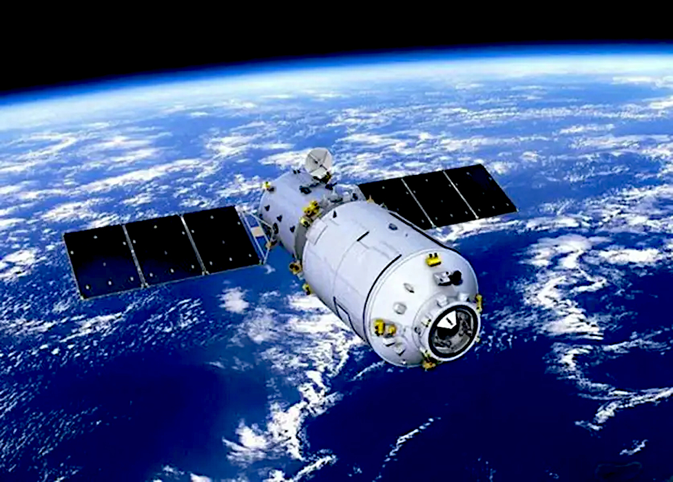
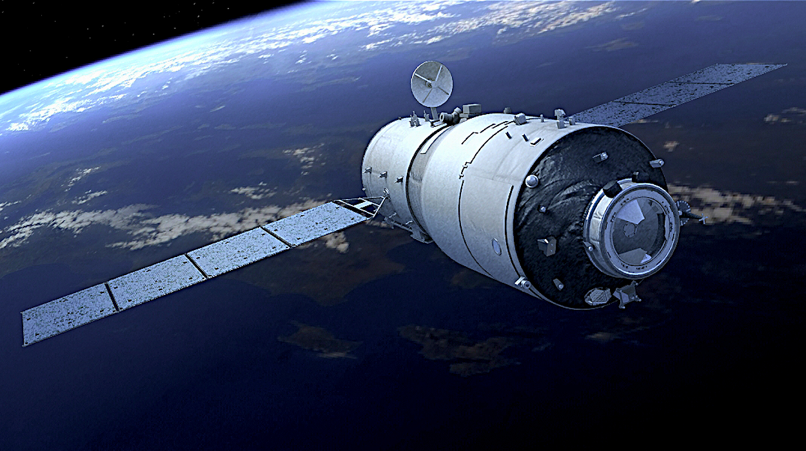
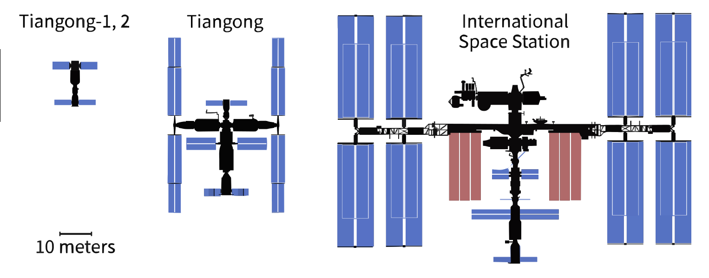

The Tiangong program is China's space program to create a modular space station, comparable to Mir. Mir was a space station built and operated by the Soviet Union and later by Russia, from 1986 to 2001. The Tiangong program is fully built and operated by China as part of the China Manned Space Program that began in 1992.
China launched its first space station, Tiangong-1, on 29 September 2011 and a more advanced station Tiangong-2 on 15 September 2016. Another larger station, Tiangong-3, was originally planned, however the goals for this station were accomplished with Tiangong-2 and it was therefore not built. Although these small "space laboratories" were used by visiting crews for science experiments, their main purpose were as test beds for the later, much larger, Tiangong Space Station.
Unlike the earlier stations, The Tiangong space station is modular. It consists of a 22.6-ton core module and two major laboratory modules. The core module was launched on 29 April 2021 and the laboratory modules were launched in 2022. The station can support three astronauts for long-term habitation.
Reference: Wikipedia - Tiangong Program
The space program of the People's Republic of China began in the 1950s, when, with the help of the newly allied Soviet Union, China began development of its first ballistic missile and rocket programs. This was in response to the perceived American (and, later, Soviet) threats.
Driven by the successes of Soviet Sputnik 1 and American Explorer 1 satellite launches in 1957 and 1958 respectively, China launched its first satellite, Dong Fang Hong 1 in April 1970 aboard a Long March 1 rocket, making it the fifth nation to place a satellite in orbit.
China has one of the most active space programs in the world. Space launch capability is provided by the Long March rocket family and four spaceports Jiuquan, Taiyuan, Xichang and Wenchang. It has conducted the highest number of orbital launches each year and operates a large fleet of communications, navigation, remote sensing and scientific research satellites.
China has also sent spacecraft to the Moon and Mars and is one of the three countries to have independent human spaceflight capability.
Most of China's space activities are managed by the China National Space Administration (CNSA) and the People's Liberation Army Strategic Support Force, which directs the astronaut corps and the Chinese Deep Space Network.
Reference: Wikipedia - Chinese Space Program
In 1999 two versions of the station were studied: an 8-metric ton "space laboratory" and 20-metric ton "space station". In 2000 it was planned to modules derived from the orbital module of the Shenzhou spacecraft. This station would be around 20 m long, have a total mass of under 40 metric tons and could be expanded with further modules.
In 2001 the following three-step process was proposed with a completion target date of 2010:
Phase 1: Crewed flight (successfully occurred in 2003).
Phase 2: A scaled back version of the orbital space laboratory that would only be crewed on a short-term basis. It would be left in an automated mode between visits.
Phase 3: A larger space laboratory, which would be permanently crewed and be China's first true space station.
Reference: Wikipedia - Human Spaceflights to Tiangong

In 2011 the 8-metric ton space laboratory
module called Tiangong-1 was successfully launched. This module, known as the "target vehicle" had two docking ports to accommodate spacecraft.
In 2012 the Shenzhou 9 craft carried three crew to Tiangong-1 for 13 days and in 2013 Shenzhou 10 carried three crew to it for 15 days. Tiangong-1 remained in orbit until 2018 when it was de-orbited and destroyed.
Reference: Wikipedia - Tiangong-1

The similar 8-metric ton module, Tiangong-2, called a "space laboratory", was launched in 2016. A month after its launch the Shenzhou 11 craft carried two crew to the station for a stay of 33days. This was the only mission to Tiangong-2 which was de-orbited and destroyed in 2019.
Another larger 22-metric ton module, Tiangong-3, was originally planned to be launched in 2015. The goals for this station were accomplished with Tiangong-2 and it was therefore not built.
Reference: Wikipedia - Tiangong-2 | Tiangong-3

(Click image to enlarge)
The third and final station in the program is simply called the "Tiangong Space Station". It has three modules with a total mass of one hundred metric tons.
The core module, the Tianhe, was launched in 2021. The two laboratory cabin modules, Wentian and Mengtian were both launched in 2022 and permanently attached to Tianhe.
The station is designed for long duration occupation and as at mid 2025 it has been occupied almost continuously by nine crews of three. There was a short gap between crew one and two.
Reference: Wikipedia - Tiangong Space Station | eoPortal - Tiangong
China Space Report - Tiangong
| China Manned Space - Tiangong
More details are given in the Stations section.

{kind=link}
{kind=link}
{kind=link}